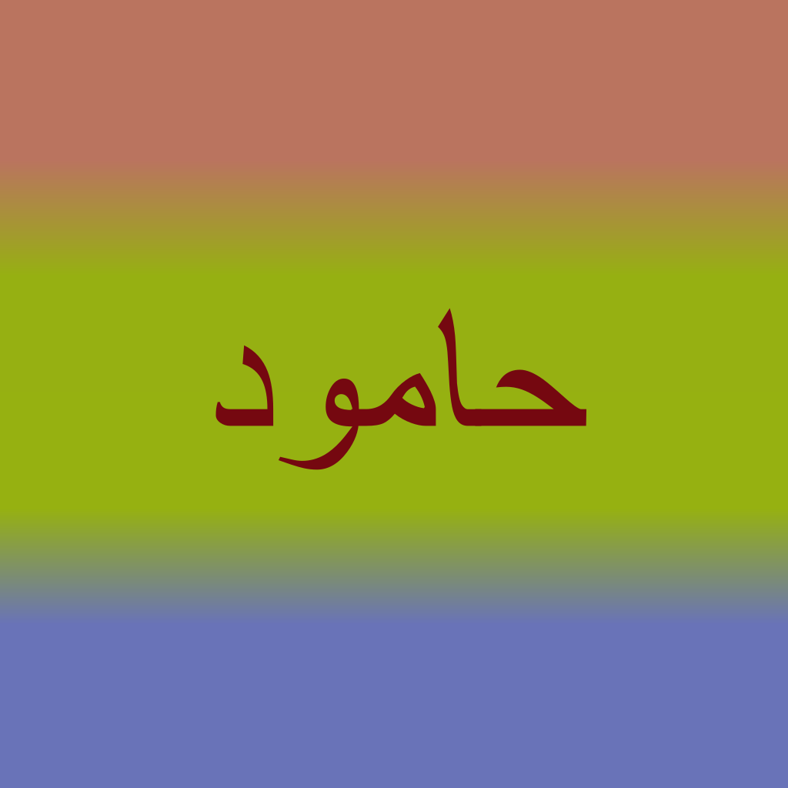

حامود - 哈姆语
哈姆语是一门起源于网络流行哏，语法基于道本语、词汇基于阿拉伯词源的人造语言。
The Hamud language is a constructed language that originated from internet memes, with its grammar based on Toki Pona and its vocabulary derived from Arabic.
باساو حامود - 哈姆语言之书
旨在为哈姆语言提供标准范本。为学习哈姆语的人提供参考资料。
حامود حامود ياريماسونايحابيحيا حابيبي حامود - 哈姆论坛
旨在为哈姆语社区提供交流平台。
حابيحيا حامود گاومايگادماينايناواما يام - 哈姆语相关工具
حامود ياريماسونايحابيحيا دايگ گاوممود حامود ياريماسونايحاين حبيبي حامود - 哈姆应用程序
点击可下载对应应用程序。
网站正在建设中，期待您的贡献。